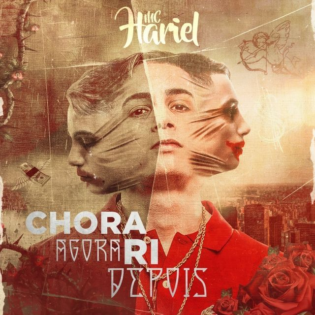

Discografia
Composta por cinco albums, singles e EP, com 39 musicas, feats e participações especiais. Seu ultimo album "mundao girou", marcou o seus 10 anos de carreira, juntamente com este lançamento, o artista anuncia a parceria com a lacoste, que patrocinou seu albúm. “Final de ano o bagulho vai ficar louco”, diz o MC, sobre o album.
Ao total, hariel tem mais de 200 musicas, com mais de um milhão de visualizações. Sendo, um dos fankeiros mais escutados atualmente, recentemente hariel anunciou sua tour intenacional, na Europa.
A seguir, veja os albums, singles e EP de Hariel (clique na imagem para ouvir o album):
Mundão Girou, album • 2022

Avisa que é o Funk, single / EP • 202O

Efeito Colateral, album • 2017
MC Hariel, singlle/EP • 2016
